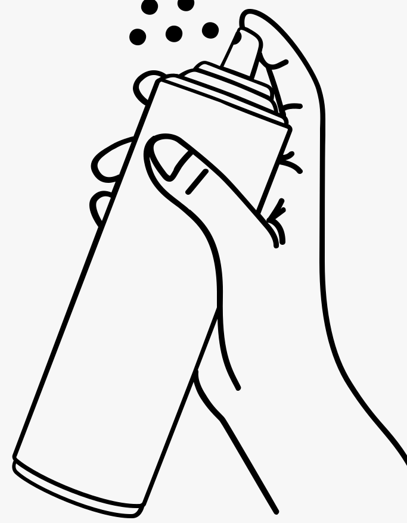
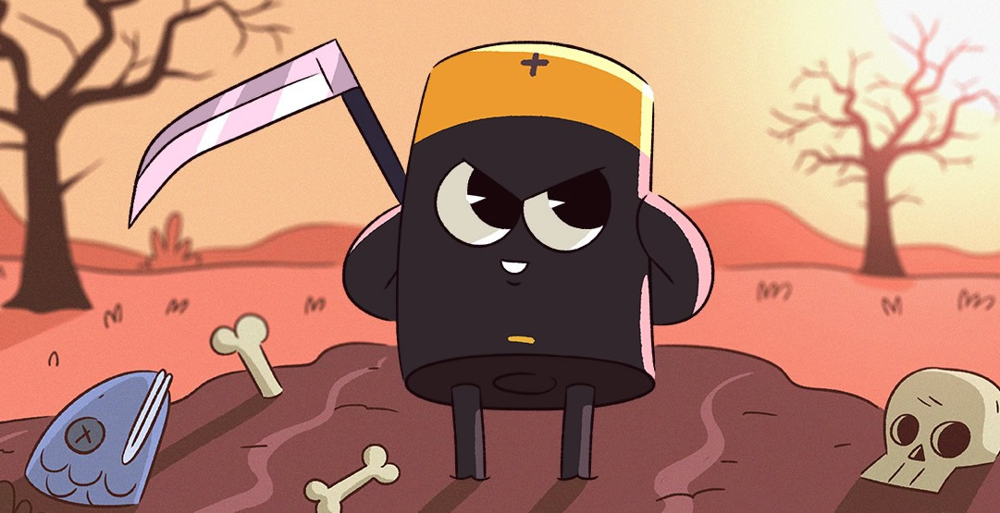
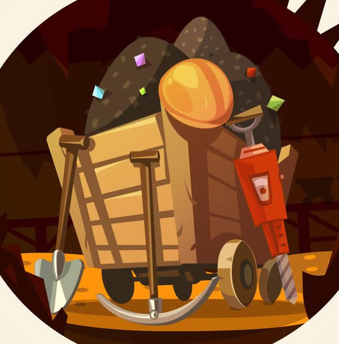

.jpg)
El ritmo al que desaparecen animales y plantas es hoy miles de veces superior al de los últimos 500 millones de años y, si no lo remediamos, dentro de un siglo habremos acabado con el 67% de la fauna en peligro de extinción y un 99,9% estará gravemente amenazada, según pronostica la Unión Internacional para la Conservación de la Naturaleza (UICN).
El daño sería tan devastador que la Tierra necesitaría de 3 a 5 millones de años para recuperarse de la sexta extinción masiva de la historia (la primera provocada por el hombre), tal y como aseguraba en 2018 un estudio de la Universidad de Aarhus en Dinamarca. Los efectos de la urbanización, la agricultura y la ganadería industrial, la tala de bosques y las emisiones de CO2, entre otras acciones, aceleran la pérdida de la biodiversidad por el calentamiento global, la desertización o la contaminación de océanos y ríos.
Utilizar desodorantes en aerosol
Los sprays:Dañan la calidad del aire, aunque, según publicó la revista científica Nature Communications en 2018, sus efectos sobre la temperatura varían en función de la zona del mundo donde se utilizan.

Beber agua en botella de plástico:Este tipo de recipientes tardan 500 años en descomponerse y liberan micropartículas perjudiciales para la salud.
Arrojar un chicle al suelo:La goma de mascar se compone, sobre todo, de plástico neutro y, además de ensuciar las calles, puede matar por asfixia a muchas aves si la confunden con alimento
Limpiarse los dientes sin cerrar el agua:El agua que podemos desechar si no cerramos el grifo es enorme. Para cepillarte los dientes no necesitas dejar correr litros de agua. Utiliza un vaso, llénalo y enjuágate la boca con él.
Asearnos sin cerrar el grifo:La Universidad Estatal de Carolina del Norte (EE. UU.) calcula que podríamos ahorrar más de 1.400 litros mensuales de agua por persona solo con cerrar el grifo al lavarnos las manos y los dientes.
Consumir alimentos con aceite de palma:Las enormes plantaciones intensivas dedicadas a la obtención de este ingrediente contribuyen a la deforestación de las selvas tropicales.
Dejar las colillas en la playa:Ocupan el primer puesto del ranking de residuos más numerosos en las costas, tardan hasta 10 años en degradarse y desprenden metales contaminantes.
Echar las toallitas desechables al váter:Estos productos no se deshacen como el papel higiénico y causan la gran mayoría de los atascos en las depuradoras y los alcantarillados.
Soltar un globo de helio al aire:Resulta peligroso, en mayor medida, para las aves, los peces y otros animales marinos que pueden asfixiarse si los ingieren por error.
Tirar las pilas a la basura:Contienen mercurio —uno de los metales más tóxicos del mundo—, tardan entre 500 y 1.000 años en desaparecer y una sola de estas baterías puede contaminar hasta 3.000 litros de agua.

Tirar las mallas de los packs sin cortarlas:Estos aros de plástico atrapan animales como peces y tortugas, ocasionándoles mutilaciones, malformaciones o, incluso, la muerte.
La sobrepoblación: Ha causado un gran impacto ambiental, pues ha hecho que las ciudades se expandan hacia las afueras, aumentando la construcción de viviendas, lo que ha llevado a deforestar miles de hectáreas de zonas verdes en las que habitan cientos de especies, estas han tenido que replegarse y ubicarse en nuevos territorios en los que no siempre hay alimentos, llevándolas a disminuir sus poblaciones. Además ha aumentado la explotación y el uso excesivo de recursos no renovables con el fin de abastecer las necesidades de los seres humanos
Utilizas el automóvil en “horas pico”: Comienza a intercalar el automóvil con la bicicleta, caminata o transporte público; reduce el número de viaje; comparte el automóvil con otras personas; planea los recorridos para combinar rutas, etcétera. Como No estacionarse en doble fila frente a escuelas, bancos o vías rápidas.
No realizar mantenimientos: periódicos a pilotos de estufas, tanques estacionarios y calentadores de gas.
Usar leña o papel para cocinar o calentar.
Consumir productos derivados de animales de cinco o más veces a la semana: Te puede impresionar el impacto que puedes hacer si dejas de comer estos productos una vez al día haz click en la imagen para averiguar
Tirar pilas a la basura:Una pila común puede contaminar hasta 3.000 litros de agua. Y su pervivencia en el medio ambiente es enorme: pueden tardar en degradarse entre 500 y 1.000 años. El mercurio, contenido en casi todas las pilas (aparte de arsénico, cinc, plomo, cromo o cadmio), es uno de los metales más tóxicos conocidos.
Conducir de forma no eficiente:Elegir si comprar un coche diesel o gasolina, híbrido o eléctrico, es importante para ser más ecológicos, pero también lo es el modo de conducción.Un estilo de conducción que contamina menos y gasta menos combustible significa ahorrar dinero y reducir nuestra huella de carbono.
La industria azucarera presenta efectos contaminantes sobre el agua derivados de su elevado consumo energético, sus descargas de alta temperatura y gran contenido de materia orgánica (bagazo, cachaza y vinazas). Además, contribuye a la contaminación del aire por la utilización de combustóleo y bagazo, careciendo totalmente de equipos de control de emisiones.
La industria minero-cuprífera presenta efectos contaminantes del agua por descargas ácidas, de metales, cianuros de sodio, materiales reactivos, aceites lubricantes usados y sólidos suspendidos, y del aire por partículas de polvo derivadas de sus procesos.
La industria siderúrgica afecta al agua con descargas ácidas y amoniacales; al aire con polvos, gases y humos provenientes del carbón y gas natural en procesos de combustión ineficientes.
La industria del cuero genera residuos de “descarne”, “raspa”, polvo de piel cromada y recorte; además, contamina el agua con sales, cromo, materia orgánica, grasas, taninos vegetales y sintéticos, y el aire con polvos, gases y humos.
La industria de celulosa y papel contamina el agua con materia orgánica y sustancias químicas cloradas y el aire como resultado de procesos de combustión.
Mineria :En lo que se refiere a la esta en general, los principales riesgos derivan de la fase de explotación, principalmente de la operación de presas de jales. La misma puede generar escurrimientos y arrastres de residuos minero-metalúrgicos peligrosos de alta afectación ambiental, así como la descarga de aguas residuales en cuerpos receptores. Igual ocurre en los procesos de beneficio de minerales, que pueden tener efectos ambientales negativos a través de sus aguas residuales, materiales y sustancias peligrosas y, en algunos casos, emisiones a la atmósfera. Estas últimas son particularmente importantes en los procesos de fundición y refinación.

Finalmente, La actividad petrolera: involucra acciones de grandes dimensiones que afectan drásticamente al ambiente. Ello es particularmente cierto con relación a las actividades de refinación y petroquímicas que, aunque se convierten en un importante estímulo a la formación de polos industriales, muestran por lo general niveles altos de contaminación, así como de deterioro de su entorno natural.